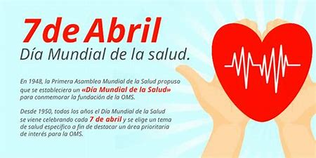
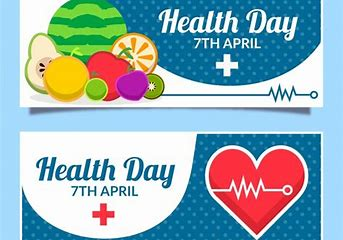
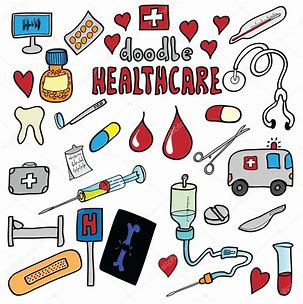

Dia Mundial de la Salud
Infografia
Informacion sobre el Dia Mundial De La Salud

Informacion sobre el Dia Mundial De La Salud
Todos los años y cada 7 de abril llega el Día Mundial de la Salud, un día que celebra a nivel mundial con cientos de eventos que conmemoran la importancia sanitaria para una vida productiva y feliz.
Se celebra en este día porque desde 1948, cuando entró en vigor la Constitución de la Asamblea Mundial de la Salud, 61 países firmaron el documento y con ello nació la OMS (Organización Mundial de la Salud). El objetivo de la OMS es recordar lo importante que es apoyar a las personas de todos los rincones del mundo en el cuidado y protección. Cada año se tiene un temática diferente y en esta ocasión se eligió “la depresión” para concientizar a la población sobre la importancia de esta enfermedad que afecta muchas personas y la relevancia de tener una vida saludable y feliz.
La Organización Mundial de la Salud se fundó sobre la base del principio de que todas las personas deberían poder hacer efectivo su derecho al grado máximo de salud que se pueda lograr. Por lo tanto, la “Salud para todos” ha sido la visión que nos ha guiado a lo largo de más de siete decenios. También es el motor de la actual iniciativa impulsada a nivel de toda la Organización de ayudar a los países a avanzar hacia la cobertura sanitaria universal (CSU). La experiencia nos ha demostrado, una y otra vez, que la cobertura sanitaria universal se logra cuando existe una firme determinación política. Así pues, en este año en que celebra su septuagésimo aniversario, la OMS pide a los líderes mundiales que respeten los compromisos que contrajeron cuando acordaron los Objetivos de Desarrollo Sostenible en 2015, y que se comprometan a adoptar medidas concretas para promover la salud de todas las personas. Ello significa garantizar que todas las personas, en cualquier lugar, puedan tener acceso a servicios de salud esenciales y de calidad sin tener que pasar apuros económicos. La Organización dedicará una atención de alto nivel a la CSU por medio de una serie de actos organizados a lo largo de 2018, que comenzarán con el Día Mundial de la Salud, el 7 de abril, con conversaciones a nivel mundial y local sobre la manera de alcanzar el objetivo de la salud para todos.
«La salud es un estado de completo bienestar físico, mental y social, y no solamente la ausencia de afecciones o enfermedades». Constitución de la OMS
Nuestro objetivo es construir un futuro mejor y más saludable para las personas de todo el mundo. A través de las oficinas que la OMS tiene en más de 150 países, nuestro personal trabaja junto con los gobiernos y otros asociados para que todas las personas gocen del grado máximo de salud que se pueda lograr. Juntos nos esforzamos por luchar contra las enfermedades, ya sean infecciosas, como la gripe y la infección por el VIH, o no transmisibles, como el cáncer y las cardiopatías. Ayudamos a que las madres y los niños sobrevivan y avancen en la vida para que puedan conservar la salud hasta una edad avanzada. Velamos por la salubridad del aire que respiran las personas, de los alimentos que comen y del agua que beben, así como de los medicamentos y las vacunas que necesitan.
Informacion Extra acerca de la OMS(Organizacion Mundial De La Salud)El objetivo de la cobertura sanitaria universal es asegurar que todas las personas reciban los servicios sanitarios que necesitan, sin tener que pasar penurias financieras para pagarlos. Para que una comunidad o un país pueda alcanzar la cobertura sanitaria universal se han de cumplir varios requisitos, a saber:
La cobertura sanitaria universal tiene consecuencias directas para la salud de la población. El acceso a los servicios sanitarios permite a las personas ser más productivas y contribuir más activamente al bienestar de sus familias y comunidades. Además, asegura que los niños puedan asistir a la escuela y aprender. Al mismo tiempo, la protección contra riesgos financieros impide que las personas se empobrezcan al tener que pagar de su propio bolsillo los servicios de salud. Por lo tanto, la cobertura sanitaria universal es un componente fundamental del desarrollo sostenible y la reducción de la pobreza, y un elemento clave de todo esfuerzo por reducir las desigualdades sociales. La cobertura universal es el sello distintivo de un gobierno determinado a mejorar el bienestar de todos sus ciudadanos. La cobertura universal está sólidamente basada en la Constitución de la OMS de 1948, en la que se declara que la salud es un derecho humano fundamental, así como en el programa de Salud para todos establecido en 1978 en la declaración de Alma-Ata. La equidad es un aspecto primordial. Eso significa que los países deben evaluar los progresos no solo en el conjunto de la población nacional, sino en los diferentes grupos (por ejemplo, los grupos determinados por niveles de ingresos, sexo, edad, lugar de residencia, condición de migrante u origen étnico).
Informacion acerca de la cobertura SanitariaPara que una comunidad o un país pueda alcanzar la cobertura sanitaria universal se han de cumplir varios requisitos, a saber:
Existencia de un sistema de salud sólido, eficiente y en buen funcionamiento, que satisfaga las necesidades de salud prioritarias en el marco de una atención centrada en las personas (incluidos servicios de VIH, tuberculosis, paludismo, enfermedades no transmisibles, salud maternoinfantil) para lo cual deberá:
Asequibilidad: debe haber un sistema de financiación de los servicios de salud, de modo que las personas no tengan que padecer penurias financieras para utilizarlos. Esto se puede lograr por distintos medios.
Acceso a medicamentos y tecnologías esenciales para el diagnóstico y tratamiento de problemas médicos.
Una dotación suficiente de personal sanitario bien capacitado y motivado para prestar los servicios que satisfagan las necesidades de los pacientes, sobre la base de las mejores pruebas científicas disponibles.
